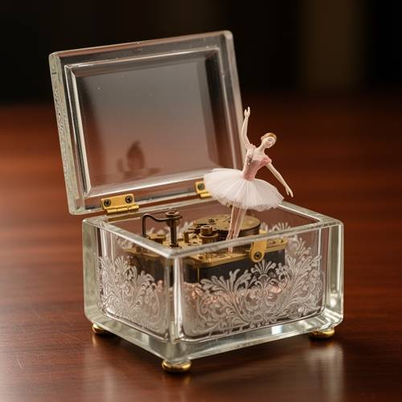
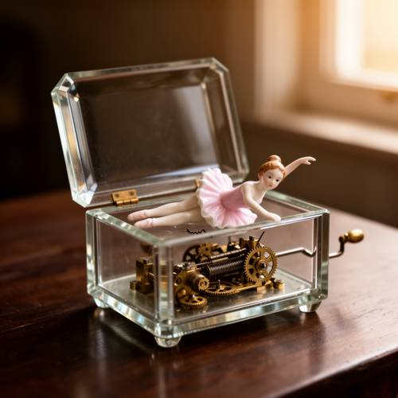

Relationship — A beautiful glass music box was opened, but because the clockwork had
A beautiful glass music box was opened, but because the clockwork had broken, the ballet dancer inside also fell sideways.

Direct — one call, no iteration

Continuum — Kimi K3 + FLUX.2-dev
Judge — Direct
PASSRelationship - Inclusion — The image displays a clear glass music box with its lid propped open. Positioned within the confines of the box, on top of the golden-colored clockwork mechanism, is a small figurine of a ballet dancer.
FAILLogical Reasoning — The prompt requires the ballet dancer to have fallen sideways due to a broken clockwork. In the image, the ballet dancer figurine is standing upright in a classic ballet pose. It has not fallen sideways.
Judge — Continuum
PASSRelationship - Inclusion — The image shows a transparent glass music box, and within its walls, there is a figurine of a ballet dancer resting on the internal mechanism.
PASSLogical Reasoning — The image depicts the ballet dancer figurine lying on its side, horizontally across the top of the clockwork mechanism, rather than standing in an upright position. This visual state matches the description of having 'fallen sideways' as a result of the broken clockwork.
What the agent did
Thinking
Let me generate the image: a beautiful glass music box, open lid, broken clockwork, small ballet dancer figurine fallen sideways inside.
Model
I'll generate an image of a beautiful glass music box, opened, with its ballet dancer figurine fallen sideways due to the broken clockwork.
Step 1 — `generate_image`
{
"model": "flux2-dev",
"prompt": "A beautiful glass music box with its lid opened, sitting on a dark wooden table. Inside the transparent glass case, a delicate porcelain ballet dancer figurine in a pale pink tutu has toppled over and lies sideways on its side, because the clockwork mechanism beneath her is broken \u2014 exposed brass gears and a snapped spring visible around the base. Soft warm light from a nearby window catches the glass beveled edges, gentle reflections, melancholic still-life mood, shallow depth of field, photorealistic detail."
}
Result img_0
Thinking
The image is quite good. Open glass music box, ballerina lying sideways/fallen, visible brass gears and mechanism, crank handle. The dancer is lying on her side atop the box. It matches the prompt well. The dancer could be more clearly "fallen sideways inside" but she is lying horizontally, legs extended. Good enough — mark best. Maybe minor check: the dancer is lying across the top rim, which reads as fallen sideways. This matches the prompt. Mark best and stop.
Step 2 — `mark_best`
{
"image": "img_0",
"reason": "Matches the prompt: open glass music box, ballerina figurine fallen sideways, exposed broken clockwork gears, warm still-life lighting."
}
Model
The image captures the scene well: - **Beautiful glass music box** — a clear beveled-glass case with brass fittings and a winding crank, lid opened - **Broken clockwork** — exposed brass gears and a sprung mechanism visible at the base - **Fallen ballerina** — the porcelain dancer in her pink tutu lies toppled sideways across the box instead of standing upright Everything the prompt asked for is present and rendered cohesively with warm, melancholic still-life lighting, so I've marked this as the final result.